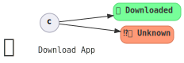
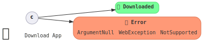
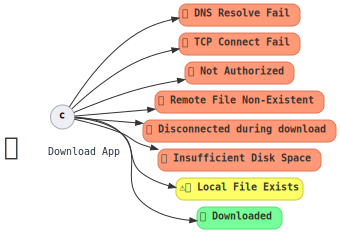

Path Handling
How exhaustive code path coverage is, and how each path is handled.

Maturity Levels
Happy Path only

- If it works, it works.
- If it fails, it might crash, it might carry on with a bad value.
code snippets
Bash:
#! /bin/bash
curl http://somewhere.com/app.zip -o app.zip
# Much better with:
# set -euo pipefail
C#:
void AppDownload()
{
var webClient = new WebClient();
webClient.DownloadFile("https://somewhere.com/app.zip", "app.zip");
}
In Rust:
fn app_download() {
let bytes = reqwest::blocking::get("https://somewhere.com/app.zip")
.unwrap()
.bytes()
.unwrap();
let mut file = File::create("app.zip").unwrap();
file.write_all(bytes).unwrap();
}
Model Attributes
- Fast to implement / test how things should work.
- Maintenance cost scales quickly with usage.
- Difficult (costly) to diagnose failure (no logic to reply with failure information).
It worked vs it didn't
Similar to "happy path only", but treat all errors the same.
To the user, this is similar to happy path only, but in code, there is effort to capture whether something worked vs it did not work.

code snippets
C#:
void AppDownload()
{
var webClient = new WebClient();
try { webClient.DownloadFile("https://somewhere.com/app.zip", "app.zip"); }
catch (Exception e)
{
throw new System.InvalidOperationException("Failed to download app.zip", e);
}
}
Rust:
fn app_download() -> Result<(), Box<dyn std::error::Error>> {
let bytes = reqwest::blocking::get("https://somewhere.com/app.zip")?.bytes()?;
let mut file = File::create("app.zip")?;
file.write_all(bytes)?;
}
Model Attributes
- Medium effort to implement / test how things should work.
- Maintenance cost still scales quickly with usage.
- May be difficul to diagnose failure (failure information is not suitable to pass across systems – not strongly typed).
99% complete1 handling
Every code path is handled; same treatment of two code paths is intentional.

Every error has its own type, so at compile time you know exactly what case you are handling.
Rust supports you by having sum types and exhaustive pattern matching.
code snippets
C#:
void AppDownload()
{
var webClient = new WebClient();
var download_failed = new System.InvalidOperationException("Failed to download app.zip", e);
// https://docs.microsoft.com/en-us/dotnet/api/system.net.webclient.downloadfile?view=net-5.0
try { webClient.DownloadFile("https://somewhere.com/app.zip", "app.zip"); }
catch (ArgumentNullException e) { throw download_failed; }
catch (WebException e) { throw download_failed; }
catch (NotSupportedException e) { throw download_failed; }
}
Rust:
enum Error {
Connect(reqwest::Error),
Download(reqwest::Error),
AppCreateFile(std::io::Error),
AppWriteToDisk(std::io::Error),
}
fn app_download() -> Result<(), Error> {
let bytes = reqwest::blocking::get("https://somewhere.com/app.zip")
.map_err(Error::Connect)?
.bytes()
.map_err(Error::Download)?;
let mut file = File::create("app.zip").map_err(Error::AppCreateFile)?;
file.write_all(bytes).map_err(Error::AppWriteToDisk)?;
}
Model Attributes
- Highest effort to implement.
- Maintenance cost scales slowly with usage.
- Easier to diagnose failure as the error should indicate the exact point in the sequence of events where the failure occurs.
1 99% because we aren't handling running out of memory, or the power went out
API Implications
- Any possible failing functions must return
Result. - So, the return type of consumer-implemented functions must be type parameterized.
- Handle interrupts and stop gracefully.
choochoo constrains users to provide srcerr:SourceError<E>, which requires users to implement:
- Strongly typed error codes.
- Provide the error information that
codespan-reportingcan consume.
Importance
Arguably the most important dimension for robustness – ensuring that a system is not left in an unknown / unrecoverable state.
Live Demo
-
Artifact server:
mkdir /tmp/server && cd /tmp/serversimple-http-server --nocache -u --ip 127.0.0.1 --port 8000 -l 100000000 -
Build agent:
mkdir -p /tmp/choochoo/demo/station_a/ && cd /tmp/choochoo/demo/station_a/for i in {1..200000}; do printf "application contents $i"; done | gzip -f > app.ziprm -rf /tmp/choochoo/demo/station_{b,c,d,e,f,g,h} /tmp/server/app.zip -
choochoo:time ./target/release/examples/demo
Scenarios:
- Happy Path.
- Cannot connect to artifact server.
- Stop server before downloading.